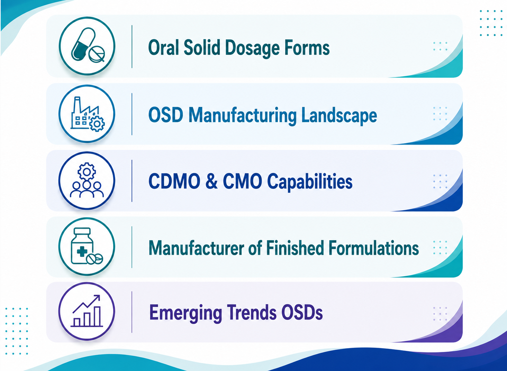

Oral Solid Dosage Forms: Manufacturing, Formulations and Pharmaceutical Landscape
21 August 2026

Oral solid dosage forms remain an established part of pharmaceutical drug development and manufacturing. Tablets, capsules, granules, and other oral solids can accommodate a wide range of APIs, excipients, release profiles, and formulation approaches. The flexibility of oral formulations allows manufacturers to develop products for immediate release, modified release, delayed release, and other delivery requirements.
The oral solid dosage forms landscape extends from conventional products to more specialized formulations designed around API characteristics, patient requirements, and manufacturing considerations. This has also created opportunities for CDMO for oral solids and CMOs offering development and manufacturing capabilities across different stages of the pharmaceutical lifecycle.
Major Oral Solid Dosage Forms
Oral solid dosage forms include pharmaceutical products administered orally in a solid state. Tablets and capsules represent two widely used categories, while granules, powders, pellets, and multiparticulate systems can also form part of the broader oral solids landscape.
Tablets can be produced through direct compression, wet granulation, or dry granulation, depending on the physical characteristics of the formulation. Capsules provide another important platform within oral formulations. Depending on the technology, capsules may contain powders, granules, pellets, or other suitable formulations. Specialized capsules can also be developed for modified drug release.
Granules can be used as intermediate materials during tablet and capsule manufacturing or can be formulated as oral products themselves. Multiparticulate systems, including pellets and granules, can provide additional formulation flexibility within oral solids.
The oral solid dosage forms category includes conventional immediate-release products as well as specialized formats such as orally disintegrating tablets, chewable tablets, multilayer tablets, extended-release products, and delayed-release formulations.
Role of Excipients in Oral Solid Dosage Manufacturing
Excipients play an important role in many oral formulations. Depending on their functionality, they may support powder flow, binding, disintegration, lubrication, coating, or modification of drug release.
Common pharmaceutical excipient categories include fillers or diluents, binders, disintegrants, lubricants, glidants, coating materials, and release-modifying polymers.
For oral solid dosage forms, excipient selection may depend on API characteristics, dosage strength, manufacturing method, stability requirements, and the intended performance of the finished product. In OSD manufacturing, excipients can also influence processing behavior. A formulation designed for direct compression may require different excipient characteristics from one manufactured through granulation.
Similarly, a modified-release oral formulation may require polymers or other functional materials capable of producing the desired release characteristics. An oral formulation manufacturer may therefore evaluate excipient functionality together with API properties and manufacturing requirements during formulation development.
Manufacturer of Finished Formulations
A manufacturer of finished formulations can play an important role in converting pharmaceutical formulations into finished products ready for subsequent packaging, distribution, and market supply.
For companies seeking an external manufacturer of finished formulations, capabilities such as formulation development, scale-up, technology transfer, regulatory support, commercial production, and packaging may be relevant. A manufacturer of finished formulations may work with different oral formulations, including conventional tablets and capsules as well as specialized products..
For pharmaceutical companies, selecting an oral formulation manufacturer can involve evaluating technical capabilities, manufacturing scale, quality systems, regulatory experience, facility infrastructure, and the ability to support the required product type.
In the evolving OSD manufacturing landscape, the ability to manage both formulation development and manufacturing may be relevant for companies seeking a more integrated development pathway.
CDMOs and CMOs for Oral Solids
The pharmaceutical manufacturing landscape includes specialized CDMO for oral solids providers that support drug developers with formulation development, analytical services, clinical manufacturing, scale-up, and commercial production.
A CDMO may provide services across multiple stages of product development. Depending on the provider, these services can include preformulation, formulation development, process development, analytical development, technology transfer, pilot-scale manufacturing, and commercial-scale production.
A CDMO for oral solids may offer capabilities covering tablets, capsules, granules, pellets, and other oral solid dosage forms. Some providers may also specialize in complex formulations such as modified-release, high-potency, or poorly soluble drug products.
CMOs traditionally focus on contract manufacturing activities, although the services offered by individual organizations can vary considerably. In the OSD manufacturing landscape, CMOs may provide commercial manufacturing, packaging, or other production-related services.
The distinction between CDMO and CMOs can vary across the industry because many organizations now provide both development and manufacturing services. Companies evaluating an external manufacturing partner may therefore consider capabilities rather than relying only on the terminology used by the provider.
Emerging Landscape of Oral Solid Dosage Forms
The oral solid dosage forms landscape continues to include established technologies alongside newer formulation approaches.Patient-centric dosage forms, modified-release systems, multiparticulates, orally disintegrating products, and technologies for poorly soluble APIs represent areas of formulation development. These approaches may be considered according to the properties of the drug and the requirements of the intended product.
Manufacturing is also evolving. Automation, process monitoring, continuous manufacturing, improved process understanding, and digital technologies may influence future OSD manufacturing strategies. For CDMO for oral solids providers, these developments can create opportunities to expand capabilities across conventional and specialized oral solids.
The market also includes a combination of pharmaceutical companies with internal manufacturing capabilities, specialized CMOs, integrated CDMO organizations, and contract manufacturer of finished formulations providers. This creates a diverse landscape for companies looking to develop or manufacture oral products.
Conclusion
The oral solid dosage forms landscape encompasses a broad range of pharmaceutical technologies, from conventional tablets and capsules to granules, multiparticulates, and modified-release systems.
OSD manufacturing combines formulation science, excipient selection, process development, equipment, analytical testing, and quality considerations. Within this landscape, CDMO for oral solids providers, CDMO, CMOs, and manufacturer of finished formulations organizations can support pharmaceutical companies at different stages of product development and commercial manufacturing.
As pharmaceutical formulation requirements become increasingly diverse, oral formulations may continue to evolve around API characteristics, patient needs, drug-release requirements, and manufacturing efficiency. For an oral formulation manufacturer, maintaining suitable formulation and manufacturing capabilities can therefore be important for supporting the changing requirements of the oral solids market.